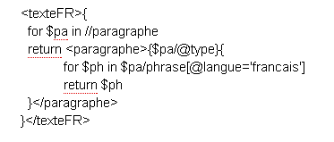
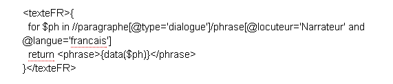

Les auteurs de la mise en forme
Les paragraphes de dialogue
Les phrases en français
La deuxième phrase de chaque paragraphe
La dixième phrase du texte (pensez à utiliser les parenthèses)
Les phrases contenant le mot "mouton" (utilisez la fonction contains())
Retournez les phrases en français triés en ordre alphabétique
Retournez les phrases françaises contenant le mot "mouton"
Pour chaque paragraphe: donnez son type, le nombre de phrases qui la compose, les modalités de ces phrases (sans répétition) ainsi que les locuteurs. (allez-y étape par étape). Astuce : pour avoir les valeurs uniques des modalités, utilisez la fonction distinct-values
Afficher la version française seulement (respectez la structure en paragraphes)
Afficher uniquement les deuxièmes phrases des paragraphes de la version française
Afficher seulement les dialogues en français du narrateur
Afficher toutes les phrases du Petit Prince en français qui comporte le mot "mouton" ainsi que le nombre de ces phrases
Nos réponses sont disponibles sur cette page
Nous nous sommes arrêtés à la question 4. Le XSL est fait mais la fonction Javascript renvoie une erreur